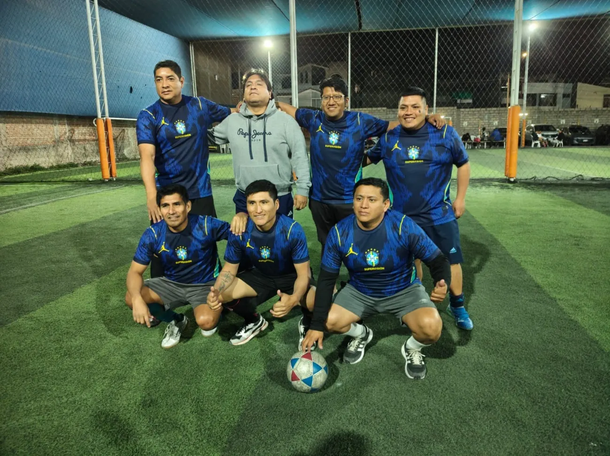
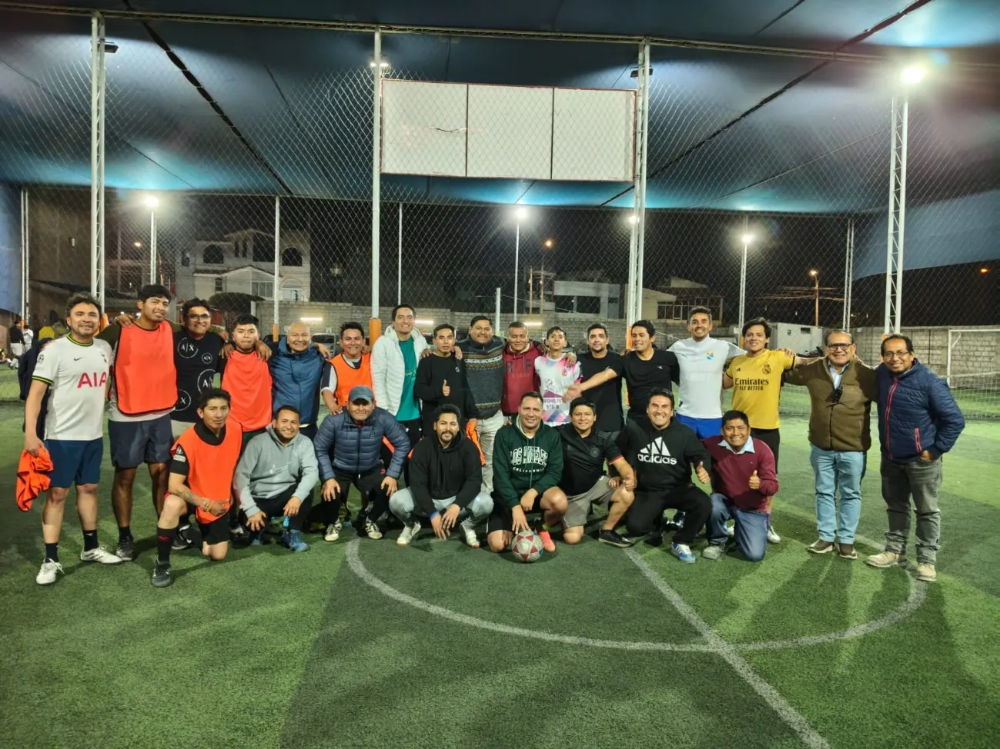
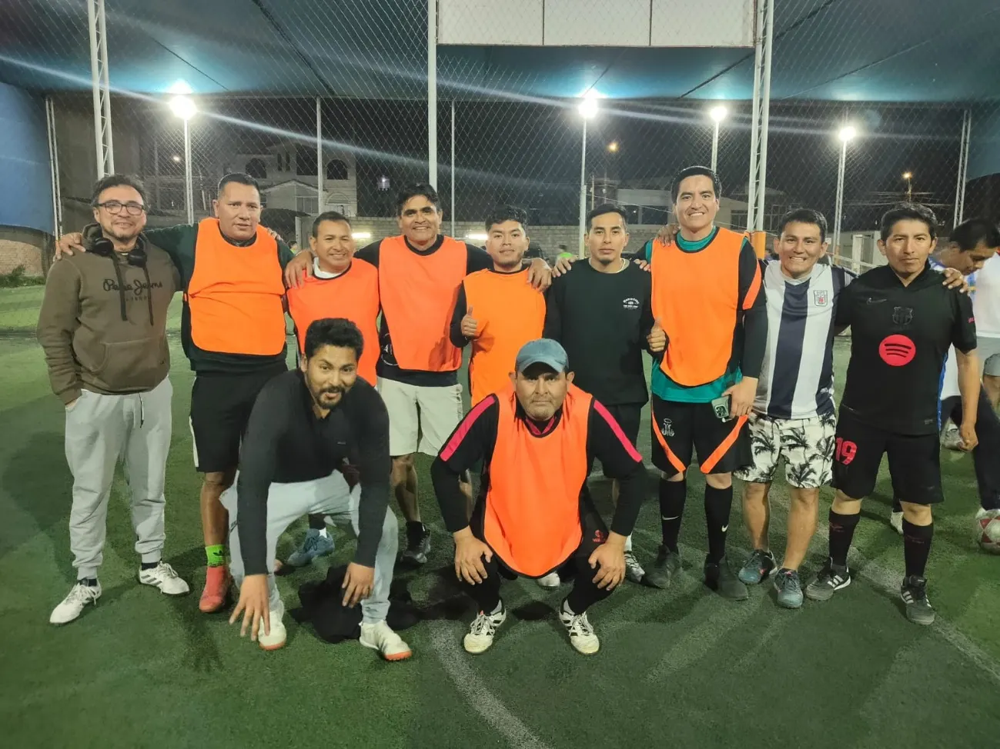
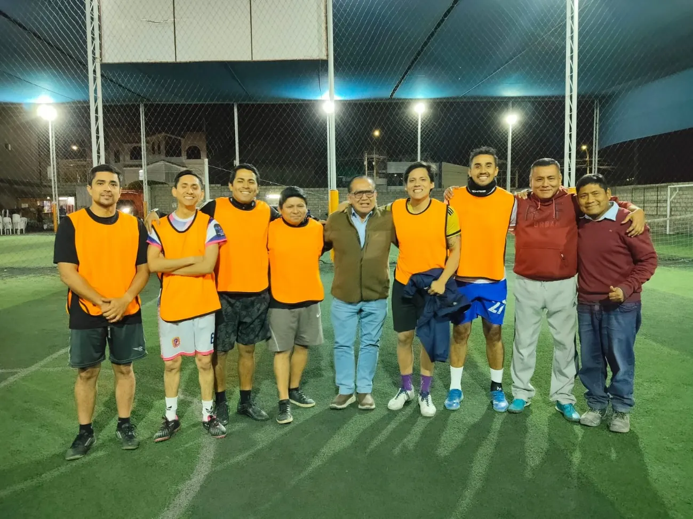
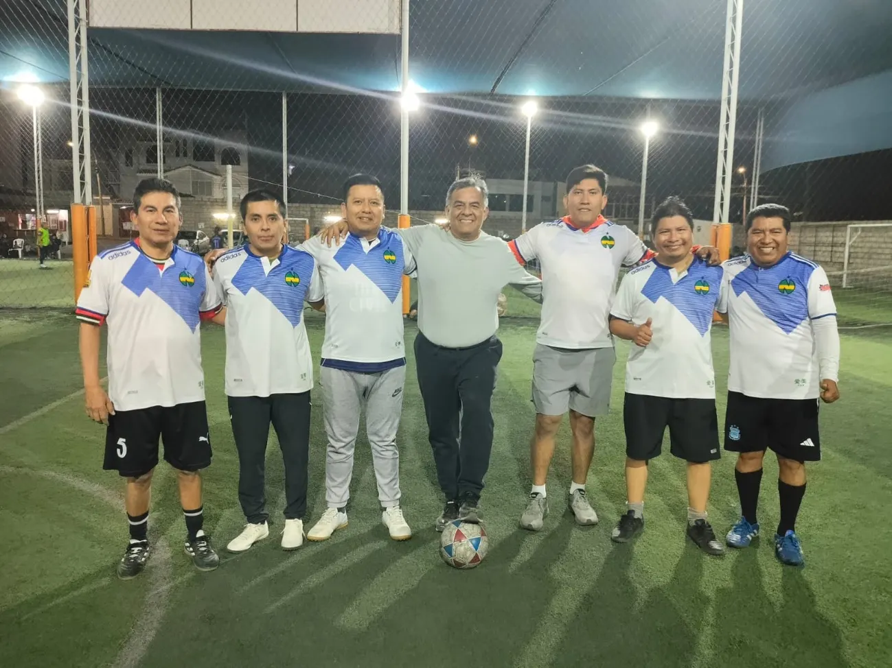
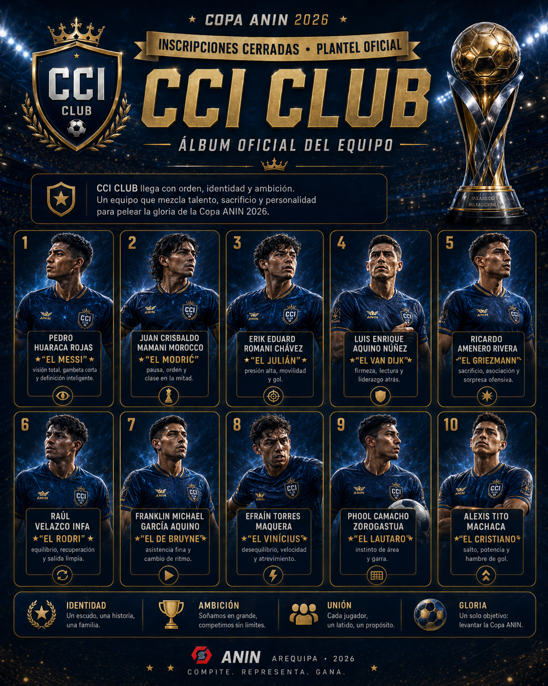

SUPERVISIÓN
CCI CLUB
Gracias por su disciplina, entusiasmo y espíritu competitivo durante toda la jornada.
La Copa ANIN 2026 reunió a cuatro equipos en una jornada de integración, compañerismo, sana competencia y pasión por el deporte. Gracias a todos los participantes por convertir esta iniciativa en una verdadera celebración institucional.
EVENTO CONCLUIDOGracias por ser parte de la Copa ANIN 2026

Expresamos nuestro reconocimiento a cada delegación, jugador y colega que participó con entusiasmo, respeto y espíritu de confraternidad.

Gracias por su disciplina, entusiasmo y espíritu competitivo durante toda la jornada.

Gracias por su energía, compañerismo y permanente disposición para compartir la cancha.

Gracias por su entrega, alegría y participación activa en esta celebración deportiva.

Gracias por representar a ANIN con orgullo, unión y un gran espíritu de integración.
Selecciona un equipo para ver su fotografía real, su álbum previo al campeonato y la identidad que llevó a la cancha.
Orden, identidad y ambición que se hicieron presentes en la cancha.

Una selección de fotografías reales que recoge la confraternidad, los equipos y los mejores momentos de la jornada.
Nos llevamos fotografías, anécdotas y el compromiso de seguir promoviendo espacios que unan a todos los profesionales del proyecto.
Volver a la galería ↑
COMPARTE TU MENSAJE DESPUÉS DEL CAMPEONATO
Deja un saludo, agradecimiento o recuerdo de la jornada. Sigamos fortaleciendo la integración que nació en la cancha.
AgradeceReconoce a los equipos y organizadores.
ComparteCuéntanos qué momento recuerdas más.
FelicitaCelebra el compañerismo y el juego limpio.